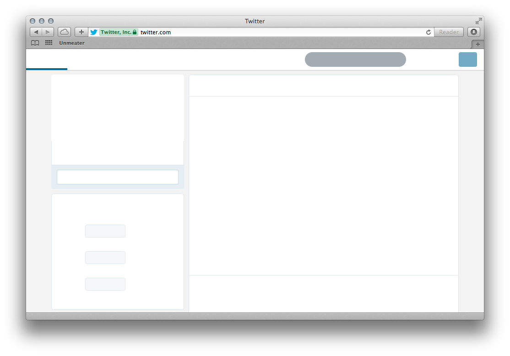

A bookmarklet for removing text and images on a web page — only the borders and backgrounds will be left!
Drag this link to your browser toolbar:
Alternative bookmarklet which hides the iframes as well:
Unmeated Twitter:

Source code and details at https://github.com/jaukia/unmeater